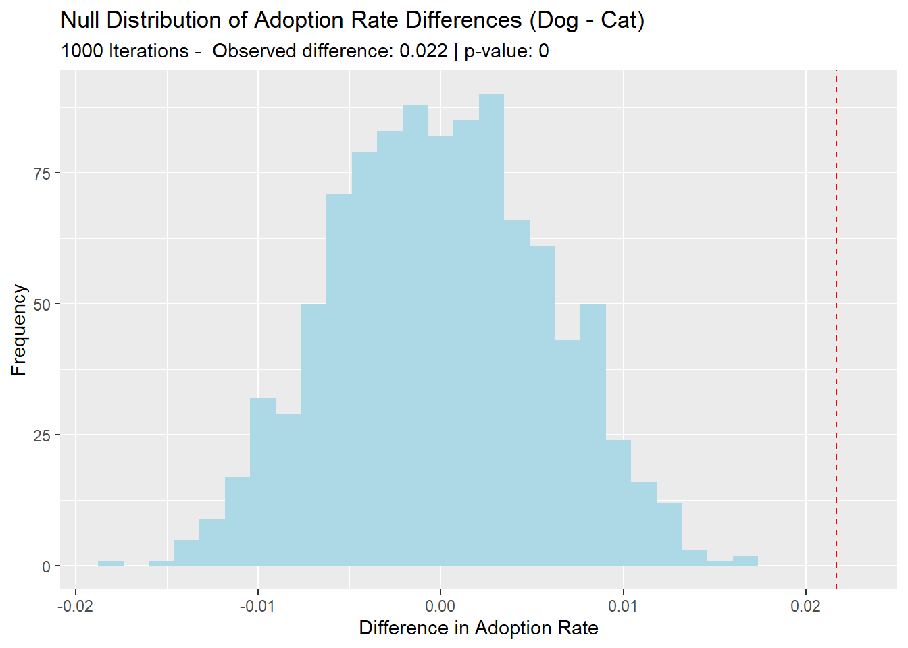

Analysis of Long Beach animal shelter data from TidyTuesday.
The dataset comes from the City of Long Beach Animal Care Services collected from 2017 to 2025, can be accessed via the {animalshelter} R package. Credit to to Lydia Gibson for curating the data.
My plan is to process the City of Long Beach animal shelter data from 2017 to 2025 to determine if people tend to adopt dogs more than cats. This is interesting to observe because it could lead us to infer that people have a preference for adopting one pet over the other, which has a plethora of potential explanations rooted in cognitive science.
Q:Are dogs adopted more often than cats?
Observational unit - Individual animals (cats and dogs) in the shelter.
Statistic (sample proportion) - Proportion of cats and proportion of dogs in the shelter that are adopted.
Parameter (population proportion) - True proportion of cats and true proportion of dogs in the shelter population that are adopted.
Variables - Choice of dog or cat (categorical) and Adopted or not (categorical).
Null Hypothesis - H₀: There is no difference in the proportion of dogs adopted and cats adopted.
Alternative Hypothesis - H₁: The proportion of dogs adopted is greater than the proportion of cats adopted.
The above table highlights the observed proportions of adopted dogs and adopted cats. Approximately 24.4% of cats were adopted at the shelter, compared to 26.6% of dogs. This means the observed difference sits at 2.17%, meaning people in the sample adopted dogs at a rate 2.17% higher than the rate at which they adopted cats. Now, I will test whether this difference is statistically significant by conducting a permutation test over 1,000 iterations.
Randomly shuffles the adopted column (breaking any link between species and adoption status).
Recalculates the adoption rates for dogs and cats.
Returns the difference in adoption rates (dog_rate - cat_rate) for that shuffled dataset.
By running this function 1,000 times using map_dbl(), I generate a distribution of differences that would occur if the null hypothesis were true.
Show the code
tibble(null_diffs = null_diffs) |>ggplot(aes(x = null_diffs)) +geom_histogram(bins =30, fill ="lightblue") +geom_vline(xintercept = observed_diff, color ="red", linetype ="dashed") +labs(title ="Null Distribution of Adoption Rate Differences (Dog - Cat)",subtitle =paste("1000 Iterations - ", "Observed difference:", round(observed_diff, 3), "| p-value:", p_value),x ="Difference in Adoption Rate",y ="Frequency" )

Plot Description:
The above plot is a visualization of the null distribution obtained from the permutation test based on 1,000 iterations. It shows us that it is extremely unlikely that the observed difference in adoption rates at the Long Beach animal shelter (2.2%) could occur if the null hypothesis were true. Therefore, I reject the null hypothesis because the p-value is nearly equal to 0 so the observed difference is statistically significant. The histogram shows the range of differences we would expect if the null hypothesis were true. This suggests that dogs are more likely to be adopted than cats in shelters. Animal shelters could use this insight to investigate why this might be occurring (marketing, pet descriptions, position of pets in the shelter, etc.).